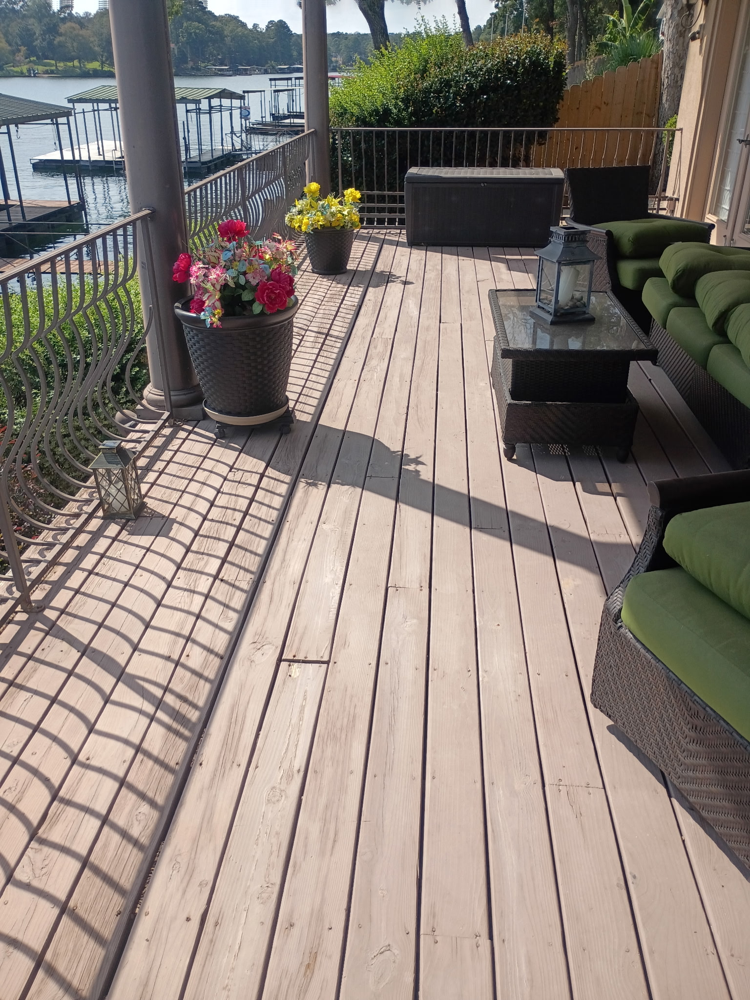

why does a new deck cost
$5K-$15K?
first:
the boards
composite. not the cheap stuff.
then:
every screw
set by hand
then:
every plug
tapped in. one by one.
hundreds of
them
two guys.
father & son
and you get
this
no stain. no sanding.
no splinters
want a price on yours?
comment "deck"